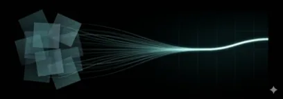
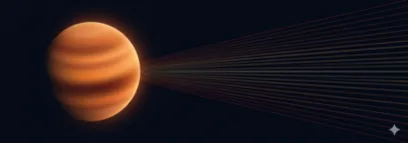
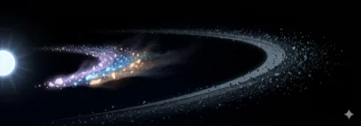
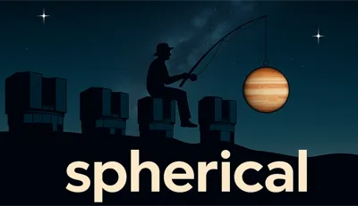

Matthias Samland
Post-doctoral Researcher
@Max Planck Institute for Astronomy (Germany)
This website features an overview of my research, publications and codes.
Research Interest
Post-doctoral researcher in the Planet Formation and Exoplanets (PFE) department at the Max Planck Institute for Astronomy. My work spans developing new detection algorithms, building open-source data pipelines, characterizing exoplanet atmospheres, and probing debris disk composition with JWST.
A New Algorithm to Find Planets
Classical imaging methods fail where planets are hardest to find: close to the star. I invented TRAP, which borrows ideas from transit spectroscopy to model each pixel's time-series instead of subtracting images—achieving up to 6× better contrast at small separations.
Details Code
Data Processing Pipelines
I build open-source pipelines that turn raw detector counts into science-ready data across ground and space telescopes: spherical (VLT/SPHERE), CHARIS-DEP (Subaru/SCExAO), and contributions to JWST and Roman CGI.
Codes
Discovery & Characterization
I led the spectral characterization of 51 Eridani b, one of the coldest directly imaged young Jupiters, and co-discovered HD 135344 Ab—a ~10 MJ giant planet at Solar-System scales and one of the youngest in a fully formed state.

Debris Disks & Evaporating Exocomets
With JWST/MIRI we made the first detection of chlorine, sulfur, and nickel gas in a debris disk—released by rocky bodies evaporating near HD 172555. This turns the system into a geochemical laboratory for extrasolar asteroids and comets.
Publications
Selected First-Author Papers
Codes

spherical
VLT/SPHERE observation database & IFS data analysis pipeline. Reduces raw detector data to calibrated spectral cubes using forward modeling, with built-in TRAP integration for planet detection.
CHARIS-DEP / SPHERE-IFS
Open-source, parallel, peer-reviewed cube extraction pipeline for high-contrast integral-field spectrographs. Processes Subaru/CHARIS and VLT/SPHERE-IFS data in under 3 minutes per cube using Cython and OpenMP.
COMPASS
Companion Proper Motion Analysis Software System. Evaluates exoplanet candidates by comparing multi-epoch astrometry against Gaia-based field star models, computing Bayesian odds ratios to distinguish true companions from background stars. Written by Philipp Herz (master’s student, supervised by M. Samland).
Contact
- Address
- Max Planck Institute for Astronomy • Königstuhl 17 • 69117 Heidelberg • Germany
- samland@mpia.de
Learning Japanese
I am often asked how I learned to read and speak Japanese fluently on my own. I wrote a guide quite some time ago to explain the methodology I followed. I am a big fan of self-study for language learning, as you can go at your own pace and do not rely on your teacher correctly balancing the progression speed of classes based on an average of the participants (who may not all share your passion and interest). If you are interested in learning the language give it shot! Remember that learning a language is not a sprint, but a marathon and therefore having fun rather than "discipline" is the way to go. Five new words a day will sum up to almost 2,000 words a year. Don't be discouraged when you're not fluent after a couple of months, but if you keep at it, you should be fluent after a couple of year (if not, you're probably doing it wrong). Also, everyone who claims that you can learn Japanese in 2 weeks is trying to sell you something. :p
The resources I used are freely available online and are linked in the guide. Good luck and have fun!